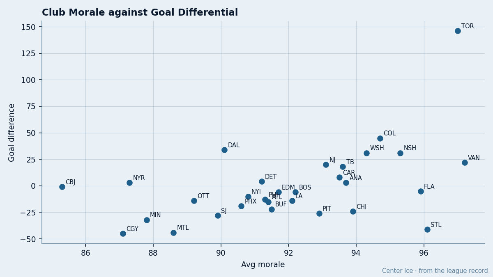

The 22 at 100: St. Louis Carries the League's Happiest Roster and the Widest Gap Between Feeling and Scoring
The Morale Scale measures the absence of grievance. Twenty-two men in St. Louis say they have none. Their goal differential is minus 41.
 Doug ReimerAnalytics editor, ex-video coach · The Slot Report
Doug ReimerAnalytics editor, ex-video coach · The Slot Report
 St. Louis Blues carries 22 players at a morale reading of 100 out of a 30-man roster. That is the most in hockey, more than double the next club (
St. Louis Blues carries 22 players at a morale reading of 100 out of a 30-man roster. That is the most in hockey, more than double the next club ( Florida Panthers at 9). Their club average is 96.1, third in the league. Their goal differential is minus 41, 28th.
Florida Panthers at 9). Their club average is 96.1, third in the league. Their goal differential is minus 41, 28th.
The gap between those two ranks is 25 positions. No other club has a gap wider than 20.
I ranked all 30 clubs by morale average and by goal differential, then subtracted. The table below shows the result. The clubs where morale outruns on-ice performance sit at the top. The clubs where on-ice performance outruns morale sit at the bottom.
The Gap: Where the Scale and the Scoreboard Disagree
| club | morale rank | diff rank | gap | morale avg | diff |
|---|---|---|---|---|---|
| STL | 3 | 28 | 25 | 96.1 | -41 |
| CHI | 8 | 24 | 16 | 93.9 | -24 |
| PIT | 13 | 25 | 12 | 92.9 | -26 |
| FLA | 4 | 14 | 10 | 95.9 | -5 |
| BUF | 17 | 23 | 6 | 91.5 | -22 |
| VAN | 1 | 6 | 5 | 97.2 | 22 |
| LA | 15 | 19 | 4 | 92.1 | -14 |
| ... | |||||
| DET | 20 | 10 | -10 | 91.2 | 4 |
| NYR | 28 | 11 | -17 | 87.3 | 3 |
| CBJ | 30 | 13 | -17 | 85.3 | -1 |
| DAL | 23 | 3 | -20 | 90.1 | 34 |
The three clubs with the biggest positive gaps, where happiness outruns production, are STL, Chicago and Pittsburgh. The three with the biggest negative gaps, where production outruns happiness, are Dallas, Columbus and New York.

What 22 at 100 Looks Like on Ice
From the Bureau's Morale Scale, five STL players appear in the league's published highest 10.
| player | morale | gp | mpg | overall |
|---|---|---|---|---|
 Keith Tkachuk88 Keith Tkachuk88 | 100 | 39 | 22.3 | 86 |
 Eric Boguniecki79 Eric Boguniecki79 | 100 | 55 | 22.8 | 78 |
 Ivan Ciernik71 Ivan Ciernik71 | 100 | 45 | 12.7 | 70 |
| Matt Walker67 | 100 | 45 | 12.6 | 66 |
 Tom Koivisto70 Tom Koivisto70 | 100 | 55 | 12.0 | 68 |
Three of five men in that group play under 13 minutes a night. Koivisto sits 12.0 minutes per game at 55 games played, a bottom-pairing defenseman on a team that allows 3.85 goals a night. He is happy. Walker sits 12.6. He is happy. Ciernik, a 70-overall winger at 12.7 a night, is happy.
The lowest morale on the STL roster is 78. No one on that club registers a grievance. The club payroll is $56.63M, producing 52 points, which works out to $1.09M per point. That is 10th-worst in the league. The building holds 13837 at $78 a ticket and generates $13.24M in profit. Nobody is losing money badly enough to be angry.
The Inverse: Unhappy and Winning
 Dallas Stars carries the 23rd-highest morale average in the league at 90.1 and the 3rd-best goal differential at plus 34. Their 49 injury spells produced only 49 days lost, the fewest in hockey.
Dallas Stars carries the 23rd-highest morale average in the league at 90.1 and the 3rd-best goal differential at plus 34. Their 49 injury spells produced only 49 days lost, the fewest in hockey.  Marty Turco97 sits at 92 morale on a contract year at $0.60M.
Marty Turco97 sits at 92 morale on a contract year at $0.60M.  Mike Modano88 missed five short spells in December and returned to 90 points through 53 games. Nobody on that club is unhappy enough to complain publicly, and nobody is content enough to relax.
Mike Modano88 missed five short spells in December and returned to 90 points through 53 games. Nobody on that club is unhappy enough to complain publicly, and nobody is content enough to relax.
 Columbus Blue Jackets is the floor of the scale at 85.3. Four of their men sit in the league's bottom 15:
Columbus Blue Jackets is the floor of the scale at 85.3. Four of their men sit in the league's bottom 15:  Espen Knutsen78 at 72, Tyler Wright76 at 72,
Espen Knutsen78 at 72, Tyler Wright76 at 72,  Marc Denis86 at 72, all at 10.8 minutes or fewer per game or in Denis' case serving as a backup at 41% share. Their goal differential is minus 1, 13th in the league. They are not bad. They are unhappy because the ice-time distribution puts four veteran men in the press-box minutes.
Marc Denis86 at 72, all at 10.8 minutes or fewer per game or in Denis' case serving as a backup at 41% share. Their goal differential is minus 1, 13th in the league. They are not bad. They are unhappy because the ice-time distribution puts four veteran men in the press-box minutes.
That club gets the ice-time grievance right. STL doesn't have the problem at all, which is its own problem.
What the Scale Measures
The Bureau's Morale Scale runs 0 to 100. I have no way to know the exact inputs. What I can say is what the output correlates with and what it does not.
Across all 30 clubs, the correlation between morale rank and goal-differential rank is weak enough that 5 clubs sit within a gap of 0 (perfect alignment), and the rest scatter from negative 20 to positive 25. If morale measured competitive edge, it would track the table. STL shows it measures something else.
The simplest reading: a club with no unhappy men is a club where no one expects more. STL's 3.11 goals per game is the 4th-worst in the league. Their 3.85 allowed is 6th-worst. A team that finishes 27 games from 52 points at a pace of roughly 77 over 82 is going nowhere. The players who are at 100 know it, and they are fine.
34 Days to the Deadline
The trade deadline is 2005-03-19, 34 days from today. STL has 27 games left. The roster is content. No one is forcing a trade, because no one is unhappy. The club has no reason to move a happy asset for a marginal pickup.
The 22 at 100 will still be at 100 on March 19. The minus 41 will probably be worse.
[[prediction:claim|STL's club morale average at the end of the season is 95.0 or higher, and their goal differential is minus 45 or worse]]